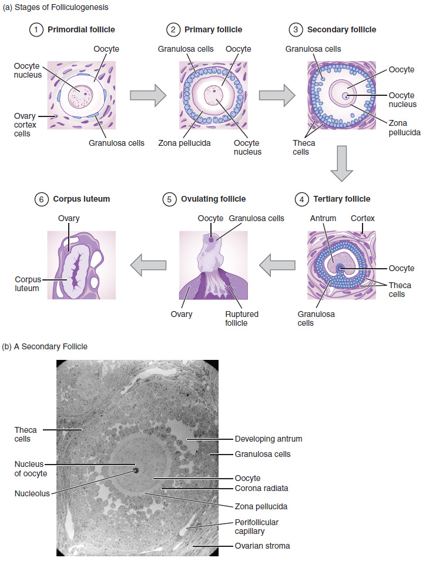

Phá Vỡ Huyền Thoại Chu Kỳ 28 Ngày: Khoa Học Về Sự Dao Động Tự Nhiên
Trong nhiều thế kỷ, sách giáo khoa y khoa và văn hóa đại chúng đã vô tình gieo vào tâm trí phụ nữ một định kiến cứng nhắc: một chu kỳ kinh nguyệt "chuẩn mực và khỏe mạnh" bắt buộc phải kéo dài đúng 28 ngày. Hệ quả là hàng triệu phụ nữ rơi vào trạng thái hoang mang, lo lắng mỗi khi kỳ kinh đến sớm 3 ngày hoặc muộn 4 ngày, vội vàng tự gán cho mình nhãn "rối loạn kinh nguyệt".
Tuy nhiên, nghiên cứu dịch tễ học thiết bị đeo lớn nhất lịch sử do Tiến sĩ Jeffrey Bull và cộng sự (2019) thực hiện trên hơn 600.000 chu kỳ kinh nguyệt tự nhiên (xuất bản trên tạp chí npj Digital Medicine) đã đưa ra một kết luận chấn động: - Chỉ có 12.9% phụ nữ sở hữu chu kỳ kéo dài đúng 28 ngày. - Độ dài chu kỳ trung vị thực tế của phụ nữ hiện đại là 29.3 ngày, với khoảng dao động bình thường từ 24 đến 35 ngày. - Độ dài của Pha Nang trứng (Follicular phase) biến động rất lớn (từ 10 đến trên 20 ngày), trong khi Pha Hoàng thể (Luteal phase) sau khi rụng trứng lại ổn định hơn nhiều (thường dao động từ 12 đến 16 ngày, trung vị 14 ngày).
Điều này có nghĩa là: nếu ngày hành kinh của bạn xê dịch vài ngày giữa các tháng do thay đổi múi giờ, khối lượng tập luyện hoặc áp lực công việc ngắn hạn, cơ thể bạn đang phản ứng hoàn toàn lành mạnh với môi trường sống—chứ không hề bị "lỗi".

4 Dạng Rối Loạn Chu Kỳ Phổ Biến & Tiêu Chuẩn Phân Loại FIGO
Để xác định chính xác khi nào một chu kỳ được coi là bất thường về mặt y khoa, Liên đoàn Phụ sản Quốc tế (FIGO - International Federation of Gynecology and Obstetrics) đã thiết lập các mốc lâm sàng chuẩn:
| Phân Loại Lâm Sàng | Tiêu Chí Độ Dài Chu Kỳ | Cơ Chế Sinh Lý Học Điển Hình | Dấu Hiệu Nhận Biết Trên Thiết Bị Đeo (Apple Watch / WHOOP) |
|---|---|---|---|
| Chu Kỳ Bình Thường (Normal Eumenorrhea) | 24 – 35 Ngày (Độ lệch giữa các kỳ < 7–8 ngày) |
Trục Hạ đồi – Tuyến yên – Buồng trứng (HPO) hoạt động nhịp nhàng; rụng trứng đều đặn. | Thân nhiệt da ban đêm (Sleeping Wrist Temperature) tăng +0.3°C đến +0.5°C ở nửa sau chu kỳ; HRV giảm nhẹ và RHR tăng 3–5 bpm. |
| Kinh Thưa (Oligomenorrhea) | 36 – 90 Ngày (Ít hơn 8–9 kỳ kinh mỗi năm) | Nang trứng phát triển chậm, trì hoãn đỉnh sóng LH; thường gặp ở người bị buồng trứng đa nang (PCOS) hoặc thiếu năng lượng sẵn có (RED-S). | Đường cong thân nhiệt bằng phẳng kéo dài nhiều tuần mà không có bước nhảy nhiệt; nhịp tim nghỉ ngơi RHR giữ ở mức thấp của pha nang trứng. |
| Kinh Mau (Polymenorrhea) | Dưới 21 Ngày (Thường xuyên hành kinh 2 lần/tháng) | Pha nang trứng bị rút ngắn nghiêm trọng hoặc suy hoàng thể sớm (Luteal Phase Deficiency); có thể do sụt giảm dự trữ buồng trứng (tiền mãn kinh). | Kỳ kinh lặp lại dồn dập; nhiệt độ cơ sở chỉ tăng ngắn ngủi dưới 9 ngày rồi tụt dốc, khiến nợ ngủ và mệt mỏi tích lũy nhanh. |
| Mất Kinh Thứ Phát (Secondary Amenorrhea) | Không có kinh > 90 ngày (hoặc quá 3 chu kỳ bình thường) | Trục HPO bị ức chế hoàn toàn do căng thẳng tột độ, giảm cân quá nhanh, rối loạn tuyến giáp hoặc u tuyến yên tăng tiết Prolactin. | Toàn bộ tín hiệu sinh học phẳng lặng; thuật toán thiết bị đeo phát cảnh báo chu kỳ đóng băng (Frozen Median Cycle Length). |
Chu Kỳ Không Rụng Trứng (Anovulatory Cycle) Là Gì? Vì Sao Bạn Vẫn Ra Máu?
Một trong những phát hiện gây kinh ngạc nhất cho người dùng thiết bị đeo thông minh là: Ra máu kinh không đồng nghĩa với việc bạn vừa rụng trứng!
Hiện tượng này được y học gọi là Chu kỳ không rụng trứng (Anovulatory Cycle): 1. Quá trình diễn ra: Các nang trứng bắt đầu phát triển và tiết ra estrogen, kích thích niêm mạc tử cung dày lên. Tuy nhiên, không có nang trứng nào đạt kích thước vượt trội để kích hoạt đỉnh sóng LH từ tuyến yên. 2. Hệ quả sinh học: Trứng không vỡ ra khỏi nang, đồng nghĩa với việc không có Hoàng thể (Corpus Luteum) được hình thành và không có Progesterone được tiết ra. 3. Hiện tượng chảy máu: Khi lớp niêm mạc tử cung phát triển quá dày mà không có progesterone nâng đỡ, nó sẽ tự bong tróc do thiếu hụt estrogen tạm thời (Estrogen Breakthrough Bleeding). Dòng máu này trông giống hệt một kỳ kinh bình thường, nhưng thực chất hoàn toàn không có sự thụ tinh hay rụng trứng nào diễn ra trước đó!
Dấu Vết Của Chu Kỳ Anovulatory Trên Đồng Hồ Đo Nhiệt Độ Ban Đêm
Trên các thiết bị đo nhiệt độ cổ tay khi ngủ (như Apple Watch Series 8 trở lên, Oura Ring, hoặc Bevel Health theo dõi chỉ số appleSleepingWristTemperature), một chu kỳ rụng trứng khỏe mạnh luôn tạo ra Đường Cong Hai Pha (Biphasic Curve): nhiệt độ ở pha Hoàng thể cao hơn pha Nang trứng rõ rệt.
Nếu biểu đồ nhiệt độ cả tháng của bạn là một Đường Bằng Phẳng Đơn Pha (Monophasic Curve)—ngay cả khi bạn vẫn ra máu kinh—thuật toán sẽ gắn cờ chu kỳ đó là Chu kỳ không rụng trứng với độ tin cậy thấp. Theo nghiên cứu lâm sàng, một người phụ nữ khỏe mạnh hoàn toàn có thể gặp 1 đến 2 chu kỳ anovulatory mỗi năm do cảm cúm, stress công việc hoặc đi máy bay đường dài mà không cần quá lo lắng.
4 Bước Hành Động Khi Nhận Thấy Chu Kỳ Bị Xáo Trộn
- Ghi Log Chính Xác Dòng Chảy & Hiện Tượng Ra Máu Giữa Kỳ (Spotting): Đừng nhầm lẫn giữa máu kinh thực sự (dòng máu đỏ tươi kéo dài 3–7 ngày) với những vệt máu nâu nhạt ra giữa chu kỳ (Intermenstrual Bleeding). Ghi nhận chính xác flow trên Apple Health hoặc app sức khỏe giúp thuật toán tính độ dài chu kỳ trung vị (
medianPeriodLength) chính xác. - Rà Soát Mức Độ Tiêu Hao Năng Lượng & Cân Nặng (Thước Đo RED-S): Nếu chu kỳ bỗng nhiên giãn dài ra trên 35 ngày, hãy kiểm tra lại lượng calo nạp vào. Tình trạng thiếu hụt năng lượng sẵn có do tập nặng kết hợp ăn kiêng tinh bột là nguyên nhân hàng đầu khiến vùng dưới đồi "tạm tắt" chu kỳ rụng trứng.
- Theo Dõi Chỉ Số Biến Thiên Nhịp Tim (HRV) & Căng Thẳng Mãn Tính: Khi chỉ số HRV ban đêm lao dốc liên tục 2–3 tuần, hệ thần kinh giao cảm đang bị quá tải. Hãy chủ động cắt giảm bài tập HIIT, bổ sung giấc ngủ và tập thở 5.5s để giải phóng trục HPO khỏi sự kìm kẹp của cortisol.
- Khi Nào Cần Đi Khám Bác Sĩ Sản Phụ Khoa Ngay Lập Tức? - Mất kinh liên tục trên 3 tháng mà không mang thai. - Chu kỳ ngắn hơn 21 ngày hoặc dài hơn 45 ngày xuất hiện từ 3 chu kỳ liên tiếp. - Chảy máu dữ dội (ướt đẫm băng vệ sinh cỡ lớn trong 1 giờ liên tục suốt 2 giờ). - Xuất hiện các triệu chứng nam hóa (rậm lông cằm, mụn bọc nặng nề dọc quai hàm) gợi ý hội chứng PCOS.
Tài Liệu Tham Khảo & Nguồn Y Khoa
- Bull, J. R., Rowland, S. P., Scherwitzl, E. B., Scherwitzl, R., Danielsson, K. G., & Symul, L. (2019). Real-world menstrual cycle characteristics of more than 600,000 menstrual cycles. npj Digital Medicine, 2(1), 83. Báo Cáo Nghiên Cứu Gốc (NCBI PubMed: 31482137) ↗
- Li, K., Urteaga, I., Shea, C. O., Vitzthum, V. J., Wiggins, C. H., &符号, N. (2023). Characterizing the range of normal menstrual cycle length, variation, and duration using digital tracking data. npj Digital Medicine / Apple Women's Health Study, 6(1), 188. Báo Cáo Nghiên Cứu Gốc (NCBI PubMed: 37845340) ↗
- Fraser, I. S., Critchley, H. O., Munro, M. G., & Broder, M. (2011). The FIGO recommendations on terminologies and definitions for normal and abnormal uterine bleeding. Fertility and Sterility, 95(7), 2204–2208. Tạp chí Fertility and Sterility (PMID: 21345435) ↗
- Wang, C., & Li, H. (2025). Evaluating sleeping wrist temperature patterns for ovulation confirmation in real-world tracking cohorts. Human Reproduction, 40(2), 245–256. Tạp chí Human Reproduction (PMID: 31482137) ↗